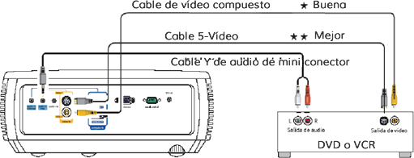
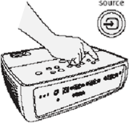

LDM
Manual de Operación del Video Proyector
Artículos incluidos
Proyector |
|
Control Remoto |
|
Cable USB |
|
Cable de Ordenador |
|
Cable de Alimentación |
|
Guarde la caja y el material de embalaje.
El control remoto usa 2 pilas AA

La parte superior del proyector incluye un conveniente panel indicador de estado con simbolos que se enciende para mostrar estados importantes
Para detalles, consulte Resolución de problemas.
Las conexiones con codificación por colores hacen más fácil. Puede conectar más de un origen, si es necesario.
1. Conecte a: Ordenador
¿Tiene un ordenador Apple?
Puede ser que necesite un adaptador. Para más información, consulte la Guía de instrucciones en www.infocus.com/support/howto
USB es opcional
La conexión USB es necesaria para:
Controlar de presentación usando el control remoto del proyector.
Actualizar el firware del proyector.
2. Conecte a: DVD o VCR* (usando los cables opcionales)
1.- Conecte el video usando un cable S-Video o de video compuesto
www.infocus.com/store número de pieza SP-SVIDEO-10M o SP-CPSTVID-5M
2.- Conecte el audio usando un cable Y de audio de mini conector a RCA
Disponible en revendedores o tiendas de A/V

También consola de juego o convertidor de TV por cable.
¿Desea un sonido mejor?
Conecte la salida de audio del origen a un receptor/amplificador o sistema de cine en casa con altavoces separados.
| 1. Conecte el cable de alimentación al proyector y a una toma corriente.
La luz de encendido en el proyector se enciende en ámbar. |
|
|||||||||
| 2. Quite la tapa de la lente |
|
|||||||||
|
3. Encienda el proyector
Pulse el botón power (en el proyector o en el control remoto). |
|
|||||||||
|
4. Espere hasta que la lámpara se caliente
Luego de algunos segundos, la luz de encendido no destelle y se enciende en verde. Puede llevar un minuto para que la lámpara alcance el brillo máximo. Advertencia: no mire directamente hacia la lente cuando el proyector está encendido. |
|
|||||||||
|
5. Encienda el ordenador u otro origen
Puede que necesite pulsar una combinación de tecla específica para activar el puerto de video externo del ordenador portátil.
Tabla completa de activación de ordenador portátil www.infocus.com/support. Importante: Si todavía no hay video, reinicie el ordenador (antes, asegúrese de que esté conectado el proyector y que éste esté encendido). |
|
|||||||||
|
6. Cambie el origen si es necesario
Si es necesario, pulse souce (en el proyector o en el control remoto) para ver el origen. Puede ser que tenga que pulsara más de una vez. |
 |
1. Altura
Para voltear la imagen, active la configuración Montaje en el techo en el menú Configuración.
1.- sostenga el botón de liberación bajo la parte frontal del proyector.
2.- levante la parte frontal del proyector hasta la altura deseada.
3.- suelte el botón
2. Corrección de distorsión trapezoidal
Pulse la tecla de keystone para hacer la imagen rectangular.
3. Zoom y enfoque
Ajuste primero el zoom y luego enfoque el centro de la imgen.
Local de proyector
Conforme la distancia aumenta, la imagen se vuelve más grande y se mueve hacia arriba.
Diagonal
Tamaño de la pantalla |
Distancia hacia la pantalla |
|
Mínima |
Máxima |
|
60 pulg. / 1.5 m |
7 pulg. 6 pie / 2.3 m |
8 pulg. 6 pie / 2.6 m |
80 pulg / 2 m |
10 pulg 2 pie / 3.1 m |
11 pulg. 6 pie / 3.5 m |
92 pulg. / 2.3 m |
11 pulg.10 pie / 3.6 m |
13 pulg. 1 pie / 4 m |
150 pulg. / 3.8 m |
19 pulg. 4 pie / 5.9 m |
21 pulg. 8 pie / 6.6 m |
Usar los menus
1. Pulse menú y luego pulse ˅ o ˄ para ver los menús.
2. Pulse select para entrar a un menú y luego pulse ˅ o ˄ para ver la configuración.
3. Pulse select para cambiar la configuración. Si aparece mas opciones, pulse o para actualizar la configuración y luego pulse select o menú para guardarla.
4. Pulse menú para volver. Vuelva a pulsar para quitar el menú.
Controlar sus presentaciones
Conecte le cable USB entre el proyector y el ordenador y luego pulse ˅ y ˄ para navegar por las diapositivas de la presentación.
Pulse el botón de encendido
La luz de encendido en el proyector destella mientras el ventilador enfría la lámpara. Si desconecta el proyector, espere hasta que el ventilador se detenga y la luz de encendido o destelle ose quede encendida.
Nota: Mientras la luz de encendido está destellando, se ignoran los comandos de los botones en el proyector y en el control remoto.
Active su garantía para tener acceso al servicio y soporte.
Obtenga ofertas especiales y notificaciones acerca de las actualizaciones gratis del producto.
Si no hay imagen o la imagen está vacía
Si la luz de encendido está apagada, asegúrese de que el cable de alimentacón está conectado a una toma de corriente alimentada. Si la luz de encendido está ambar y no destella, pulse el botón de power.
Compruebe él origen de video y los cables. Asegúrese de que el origen de video (ordenador, reproductor de DVD, VCR, etc.) está encendido y debidamente conectado entre el origen y el proyector.
Asegúrese de que el puerto de video deo ordenador está habilidato. Pulse la combinación de teclas que activa el puerto de video externo del ordenador portátil. Si todavía no hay imagen, reinicie el ordenador portátil.
Pulse el botón source. Puede ser que necesite pulsarlo varias veces para ver el origen correcto.
Pulse el botón auto image.
Si aparece "Señal fuera del intervalo", o la imagen es precaria
Pulse el botón auto image. Si esto no funciona (y el origen es un ordenador), reduzca a resolución de presentación del ordenador o la tasade actualización vertical.
Si la luz de cambio de la lámpara está encendida
Apague el proyector y espere al menos un minuto y luego vuelva a encenderlo. Si la luz de cambio de la lámpara vuelve a encenderse, es necesario cambiar la lámpara. Para las instrucciones de cambio de la lámpara, consulte la Guía de referencia, que puede descargar desde www.infocus.com/support.
Sólo las lámparas genuinas Infocus son probadas para uso en este proyector.
Si la luz de alta temperatura está encendida
Apague el proyector y quite cualquier material que pueda bloquear las ranuras de ventilación en la lateral. Deje el proyector apagado por lo menos un minuto par que se enfrié para volver a encenderlo. Importante: la operación continua en alta temperatura puede reducir la vida útil de la lámpara y/o del proyector.
Si la luz de servicio necesario está encendida
Apague el proyector y espere el menos un minuto y luego vuelva a encenderlo. Si la luz de servicio necesario vuelve a encenderse, el proyector necesita servicio.
Consulte a continuación la información de contacto de servicio.
Advertencia: en el caso improbable de que la lámpara se rompa, las partículas pueden expulsarse del proyector. Manténgase lejos del área abajo y alrededor del proyector cuando esté encendido. Consulte el folleto de instrucciones de seguridad para más detalles.
Declaración de conformidad
Fabricante: Infocus Corporation, 17500 SW Parkway Ave. Wilsonville, Oregon 97070-8238 USA
Oficina europea: Louis Armstrongweg 110, 1311 RL Almere, The Netherlands
Declaramos bajo nuestra responsabilidad exclusiova que este proyector está en conformidad con las siguientes directivas y normas: Directiva de EMC 2004/108/EC, EMC: EN55022, EN55024, EN61000-3-2, EN61000-3-3, Directiva de bajo voltJE 1006/95/ec, SEGURIDAD: iec 60950-1: Primer edición.
Marcas comerciales
Apple, Macintosh, y PowerBook son marcas comerciales, registradas o no, de Apple Computer, Inc. IBM es una marca comercial, registrada o no, de International Business Machines, Inc. Microsft, PowerBook, y Windows son marcas comerciales, registradas o no, de Microsoft Corporation. Adobe y Acrobat son marcas comerciales, registradas o no, de Adobe Systems Incorporated.
DLP® y el logotipo DLP son marcas registradas de Texas Instruments y BrillantColor™ es una marca comercial de Texas Instruments. InFocus, In Focus, a INFOCUS (estilizado) son marcas registradas o no, de InFocus Corporation en los Estados Unidos y en otros países.
Aviso de FCC
Nota: este equipamiento ha sido probado y se ha verificado que cumple con los límites para un dispositivo digital de Clase B, de acuerdo con la parte 15 de las reglamentaciones FCC. Estos límites están diseñados para aportar la protección razonable contra interferencias perjudiciales en una institución residencial. Es equipo genera, usa y puede irradiar energía de un radio frecuencia, y si no se instala y usa de acuerdo a las instrucciones, puede causar interferencia perjudiciales a las comunicaciones por radio. Si embargo no hay garantía de que no se producirán interferencias en una instalación determinada. Si este equipamiento interfiere con la recepción de radio o televisión, esto se puede determinar apagando y encendiéndolo el equipo, se recomienda al usuario intentar corregir la interferencia de las siguientes maneras:
- Reoriento o cambie el lugar de la antena receptora.
- Aumente la separación entre el equipo y el receptor.
- Conecte el equipo a una toma de corriente diferente a la que esta conectado el receptor.
- Consulte o pida ayuda al representante o aun técnico especializado en radio/TV.
Cambios o modificaciones de este equipamiento que no son expresamente aprobados por InFocus Corp. Pueden anular la autoridad del usuario de operar este equipamiento.
Canadá
Este aparato digital de clase B cumple con la norma ICES.003 de Canadá.
Cet appareil numérique de la classe B est conforme à la nome NM-003 du Canada.
Este documento se aplica a los modelos W2100 y W2106
Aprobaciones de agencias
UL, cUL
Pueden se aplicar aprobaciones específicas de otros países. Consulte la etiqueta de certificación del producto.
Clasificaciones de entrada: 100-24oV ca, 3, o A, 50-60 HZ
InFocus se reserva el derecho de cambiar las ofertas de productos y las especificaciones en cualquier momento sin aviso.